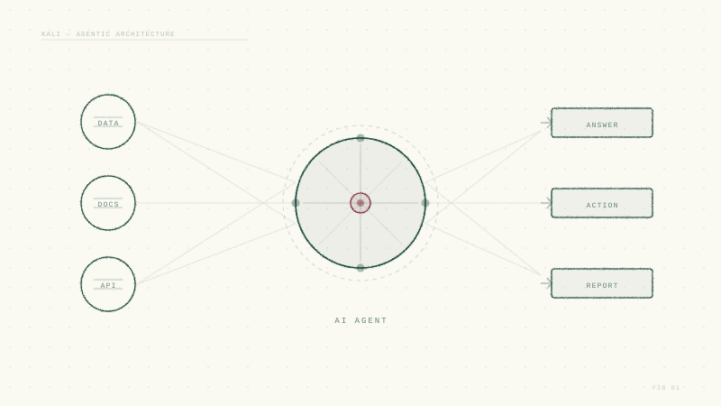
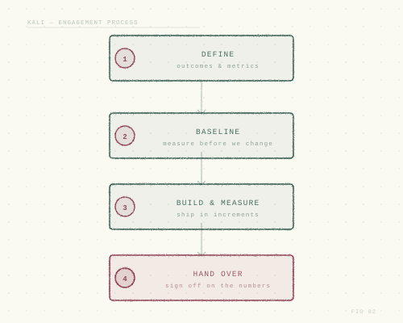

We don't take on more than we can deliver. Instead of vague commitments, every promise we make is tied to a number you can check.
What we do
Two practices. One standard of delivery.
We concentrate on two areas where AI changes what a small, experienced team can deliver.

AI agents grounded in your data and workflows
From retrieval-augmented assistants to agents that act on your systems, built to be evaluated and trusted.
- Kali RAG: answers grounded in your documents and data
- Kali Agents: AI partnerships for small and medium businesses
- Kali Training: AI courses for corporates and universities

Kali Suite: a database-driven alternative to BDD and Selenium
GUI and API automation with AI agents that triage regressions, raise defects, and propose fixes.
- Tests stored as data: scenarios, steps, validations
- Scalable, concurrent runner that plugs into CI/CD
- AI agents for regression analysis and self-healing tests
How we work
Small by design. Accountable by default.
A deliberately small team means the people you talk to are the people who build. We protect that focus by saying no to more work than we can do well.
A focused team
Senior engineers working directly with you. No hand-offs, no layers, no juggling a dozen clients at once.
Metrics over adjectives
"Faster" and "better" become baselines and targets: accuracy, latency, cost, time to feedback, defects caught.
Commitments we keep
We take on fewer projects so we never lose focus. When we commit to a scope and a target, we deliver it.
Every engagement
Agree the outcomes and the metrics that prove them.
Measure where you are today, before we change anything.
Ship in small increments, reporting against the targets.
Sign off on the numbers, with everything you need to run it.

Why kali.ltd
Built for teams who want results they can measure.
- Practical AI. We apply agents where they create measurable value, not where they make a good demo.
- Engineering discipline. Evaluation, testing and observability are part of every build.
- Knowledge transfer. Your team leaves every engagement more capable than it started.
- Plays well with your stack. Your cloud, your CI/CD, your issue tracker.

Have a problem worth measuring?
Tell us what you are trying to achieve. If we are the right fit, we'll propose the metrics before we propose the work.